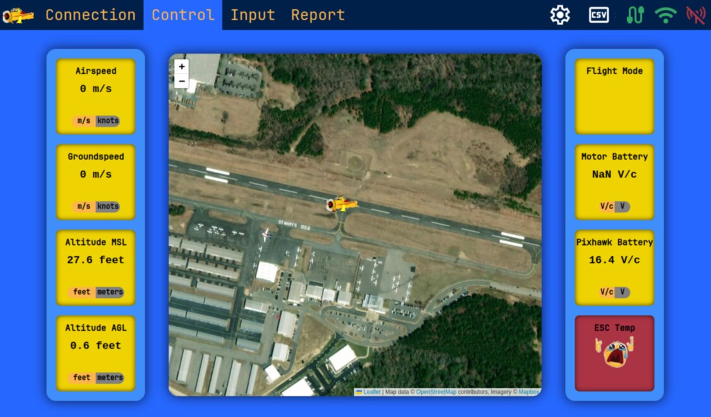
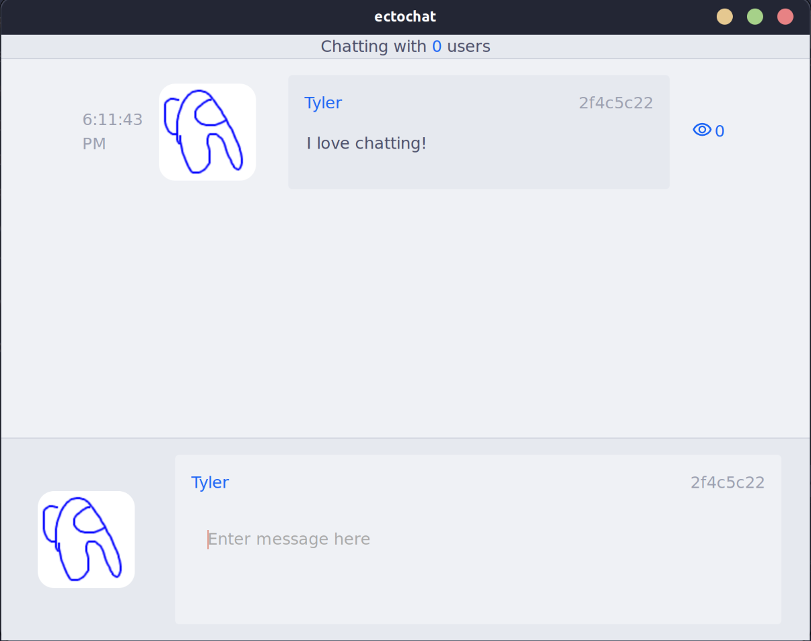
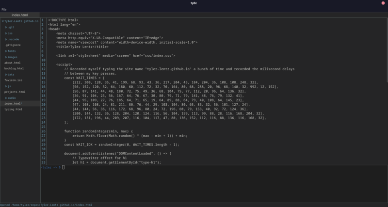
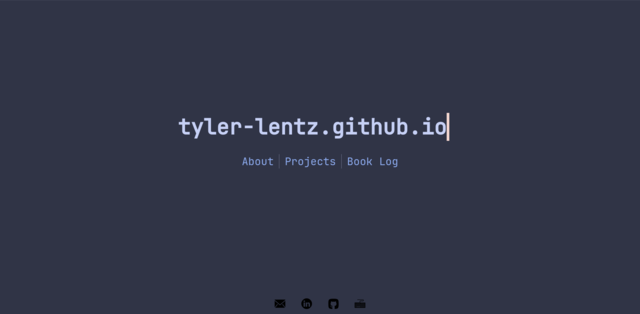
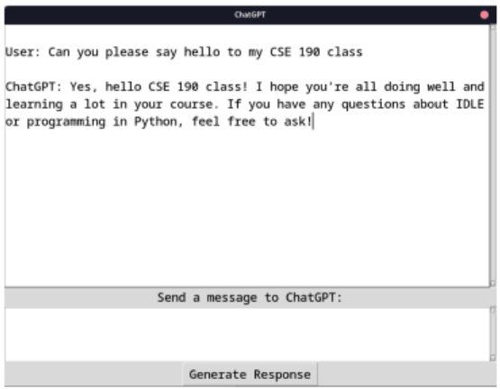

Overview
This page is an overview of all of the most relevant projects I've worked on. I have divided them into three categories: Triton UAS, Personal, and School.
The Triton UAS section contains all of the projects I've worked on in my time as a part of the club. The Personal section contains all of the projects I've worked on in my free time. And lastly, the School section contains all of the projects I've worked on as assignments for classes.
Below, you can expand out a summary of all the keywords I've used to describe each project. Clicking on a keyword will expand out a list of all the projects that have that keyword, and from there clicking on a project will take you to a page with more information about that project.
Triton UAS Projects
Overview
I joined Triton UAS in the fall quarter of my freshman year. By the summer of my sophomore year, I had become one of two leads of the software subteam. This means that I was (and currently still am) responsible for all of the software in our plane that contributes to competing in the AUVSI SUAS competition.
Essentially, the competition requires us to build a plane that can autonomously fly a mission. The mission includes waypoints, a search area, and drop targets. The plane must be able to navigate through the waypoints, cover the search area while taking pictures and identifying targets, and drop a specific payload on a corresponding target that we identify.
OBCpp: Onboard Computer++
The most impactful project I have been involved with as a part of TUAS has been the porting of our onboard computer program from Python to C++. The onboard computer is responsible for all of the second-to-second operations of the plane, such as path planning, mission management, camera controls, computer vision, and communicating with both the ground and other components on the plane itself, such as the airdrop payloads and the flight controller.
The structure of this codebase is something I helped design and am very proud of. Essentially, the whole program is modelled as a state machine, where each different "state" of the mission can be modeled as a "Tick": a piece of code that runs at a specified interval. This makes the codebase very modular, because modifying the flow of the autonomous mission is as easy as "rewriring" how ticks transition to each other, or adding new ticks to define new behaviors.
Click here to view the state diagram for the entire mission.
{kind=link}
Houston: Ground Control Station Frontend
The frontend of our ground control station, dubbed Houston, is a React web app that allows us to monitor the status of the plane while in flight and change any parameters we need to.
It currently allows the user to monitor the connectivity status of the plane; important telemetry like altitude, battery voltages, and airspeed; image data from the plane's camera; and to alter camera parameters while in flight. It also allows provides the interface to input the mission parameters, like waypoints, and upload them to the plane.
Hub: Ground Control Station Backend
The backend of our ground control station, dubbed Hub, is a REST API that allows us to communicate with the plane while in flight. It is currently built in Go and runs in a Docker container on an Intel NUC on the ground. It receives basic telemetry data from the plane via a radio connection. It sends this telemetry to our antenna tracker which points a directional wifi antenna at the plane. With this connection, the GCS can send HTTP requests to the onboard computer on the plane to request data relevant to the competition mission.
RRT* Static Path Planning
In order to plan the static path that the plane will take through the competition waypoints, we developed a system that utilizes an RRT* algorithm for path planning. I developed the original implementation of this algorithm in Python, which has since been converted to C++ (and greatly improved!)

Personal Projects
ectochat
ectochat is a LAN-based chatting app that I built using the Tauri framework. It is inspired by fond memories of Nintendo's pictochat from Nintendo DS. It allows the user to send text and image messages to anyone on the same local network.
Tyde
Tyde is a basic text editor I built to learn Rust and Svelte. It is built using the Tauri framework, which utilizes Rust for the backend and Svelte for the frontend to build native apps on top of web technologies.
tyler-lentz.github.io
This website itself is a project that I've been developing for a while, if not entirely in this form. It originated from a class I took: CSE 134B: Web Client Technologies. This class taught the foundations of HTML, CSS, Javascript, HTTP, and other frontend web technologies. Each assignment built on the previous as we slowly built up a resume website. This current iteration is the culmination of all of that work, and I plan to continue to maintain this website as a benchmark for myself to see how much I have improved.
School Projects
CSE 110: Birds of a Feather
UCSD's CSE 110 course is a class that teaches the fundamentals of software engineering. This involves agile development, design patterns, git, and working in small teams (of six, for this specific version of the course). Specifically, we applied these skills while constructing an Android Application titled Birds of a Feather. This application allowed users to create a profile which included their name, major, and UCSD courses taken. Then, they could press a button to activate bluetooth and exchange information with nearby students (for example, in the context of a lecture hall). It would then match students based on their previous courses, and allow simple preformatted messages to be sent demonstrating a desire to form a group or get to know each other.
CSE 131: "Snek" Language Compiler
As a part of a course on compilers, throughout the quarter we slowly built up a compiler for a toy language called "snek" with syntax based on s-expressions. Major compiler features included arithmetic operations, let bindings, if statements, loops, function calls, tuples/vectors/dynamically allocated data structures, garbage collection, and basic optimizations such as inlining, constant folding and propogation, and dead code elimination.
(fun (acker x y)
(if (= x 0) (+ y 1)
(if (= y 0) (acker (- x 1) 1)
(acker (- x 1) (acker x (- y 1))))))
(acker 3 3)
CSE 190: IDLE GPT
As a part of a course on working with large codebases, we developed extensions to CPython's idle application: a lightweight python IDE that comes prepackaged with Python. In my group of three people we added functionality that allows the user to interface with various Open AI models from within the editor.
